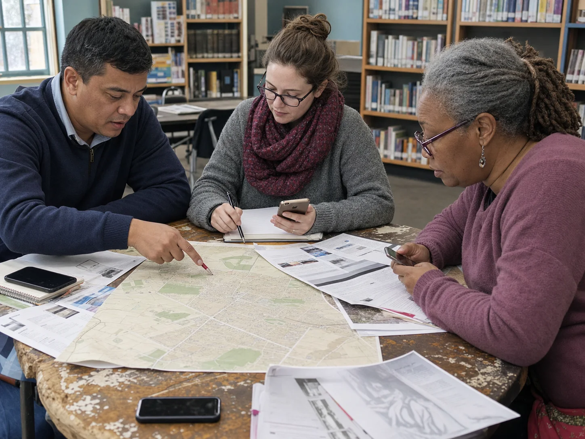

For the person asking
A familiar channel, a clear answer, and no new account to learn.
Local Relay
Connect trusted local sources to the messaging channels people already use.

The protocol keeps the channel, source, and tone separate, so each region can change one without rebuilding the others.
LINE, WhatsApp, Viber, SMS, or USSD becomes one normalized message.
Police, health, and fact-checking partners connect through a shared data contract.
The result comes back in plain, respectful language with a useful next step.
Civic Guardian lets a region keep the relationships it has already earned. The protocol handles the connection between them.

A local partner supplies an endpoint, region rules, and language guidance. The core router stays platform-agnostic.
Plug in a police, health, or fact-checking API through one documented contract.
Match regions, intents, and escalation paths without hardcoding one country's workflow.
Turn raw findings into clear replies that protect dignity and reduce fear.
Teachable moments
A short local lesson can follow each intervention, so the answer becomes a reusable skill.
Explain the link, phrase, or pressure tactic that raised concern.
Offer one simple action a person can remember before replying, forwarding, or paying.
Use language, examples, and media created by trusted community partners.
Civic Guardian supports the person asking, the people they trust, and the public teams responsible for prevention.
A familiar channel, a clear answer, and no new account to learn.
A timely handoff only when a high-risk action needs another set of eyes.
An anonymized view of recurring threats, ready for earlier local action.
Bring one channel, one regional data source, or one community learning partner.